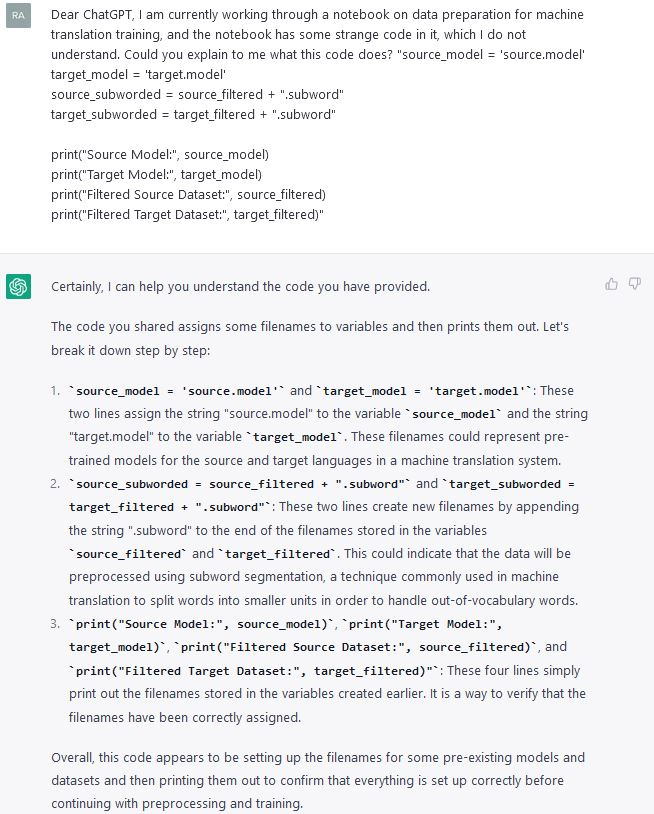
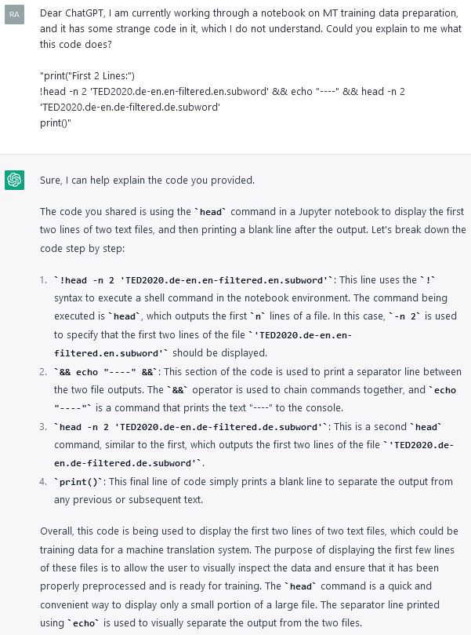
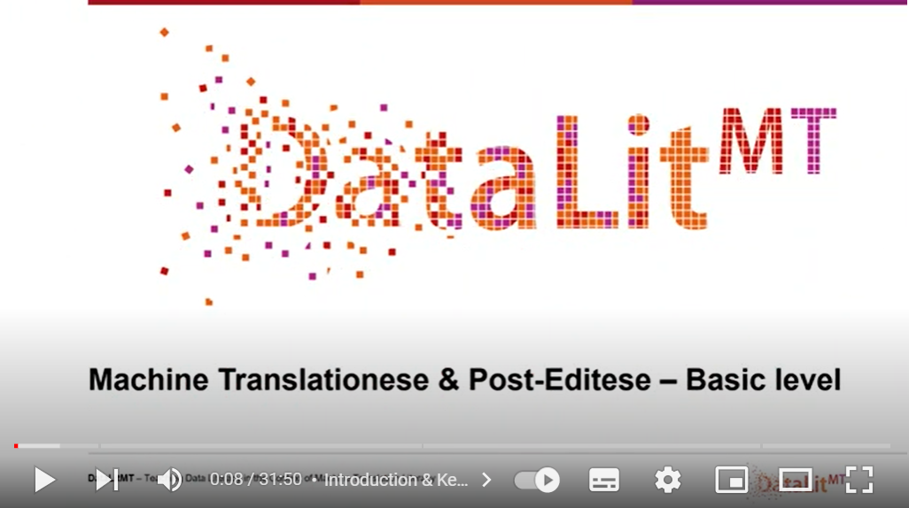
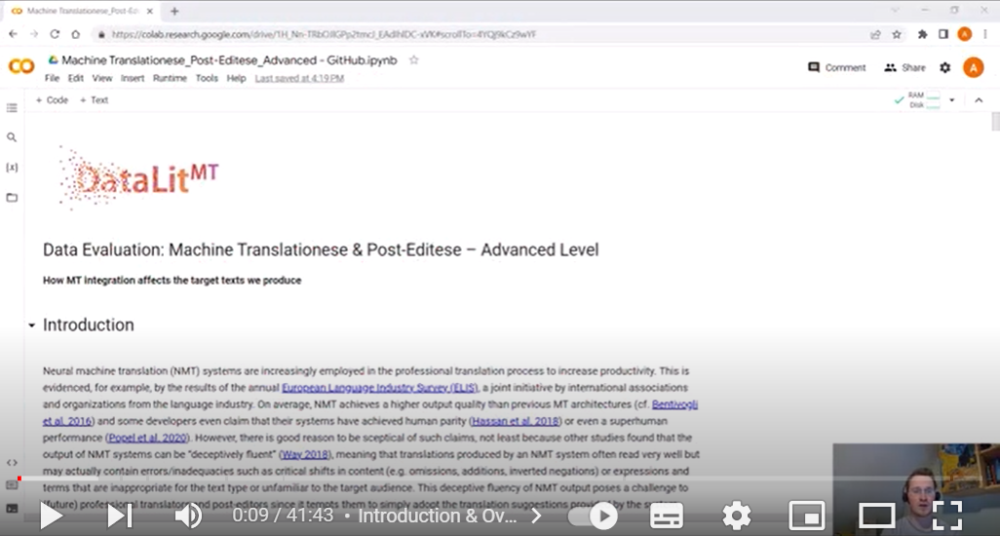
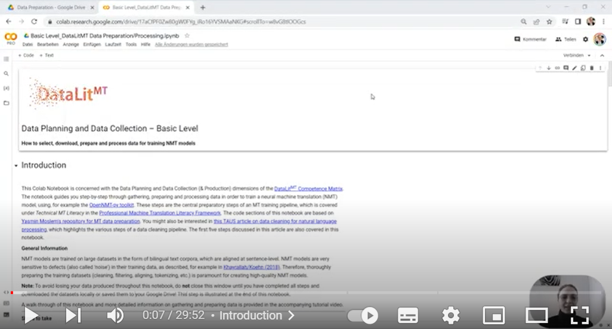
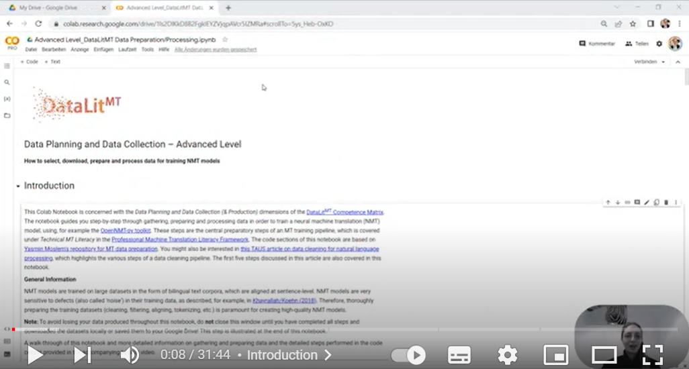
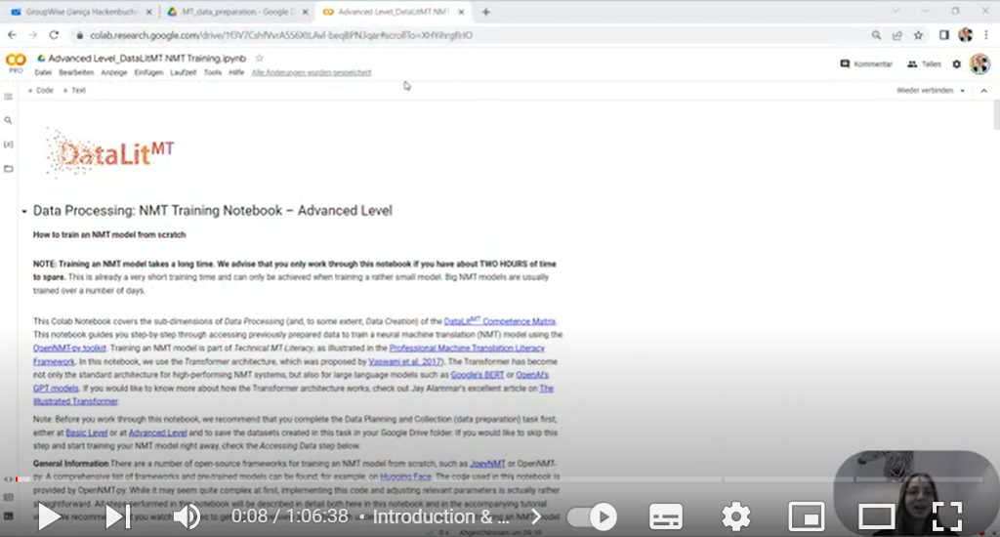
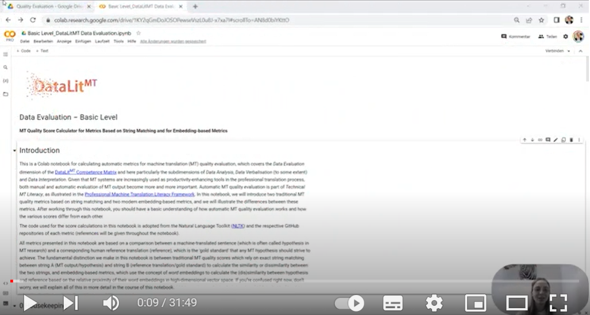
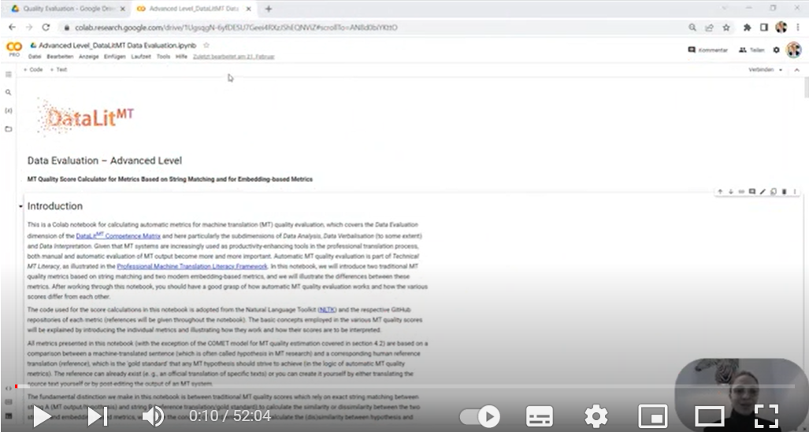
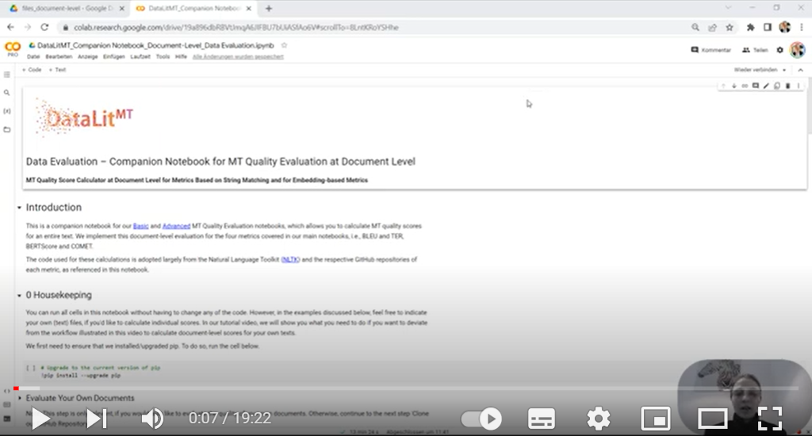

Learning Resources
This page presents the fourteen learning resources that have been created as part of the DataLitMT project. Topics cover different aspects of data culture and ethics, terminology, data preparation, NMT training and data evaluation. Based on the difficulty of these learning resources, they are structured for either basic or advanced level, as defined in the Competence Matrix. The learning resources differ in formats ranging from theoretical overviews, academic papers, Colab notebooks, to videos. All links to the resources needed can be found below.
Note: The Colab notebooks linked on this site can be opened, edited and saved. They will be saved as a copy notebook in your Google Drive folder. Your notebook copies will become your individual version; any changes you will make, will be saved. You can open the notebook links here again for the original version. Upon opening the notebooks linked here, you will receive a notification that the notebook has been created by janicahackenbuchner@gmail.com and whether you wish to work with it anyways. You can safely confirm this notification and work with the notebooks. You can work on one Google Colab Notebook at a time (and also select one GPU as a hardware processor, as explained in the relevant learning resources). You can alternatively upgrade to a paid subscription (e. g. Colab Pro) and work on multiple notebooks at a time; more information on that here. Click here to find out more about Colab notebooks.
ChatGPT
If you would like to know more information about the codes we explain in our notebooks, you are welcome to ask OpenAI's ChatGPT for an explanation. You can simply copy a code from a code cell from any of our notebooks and type them into ChatGPT, generally asking what the code does, or asking specific questions (e. g., about variables, commands). See the two screenshots below for examples.
Example 1: ChatGPT explains code (Q&A)

Example 2: ChatGPT explains code (Q&A)

Conceptual Data Overview
Basic Level
A conceptual data and machine translation overview can be found in our respective GitHub folder.
Data Ethics
Basic Level
Add link to Data Ethics paper here.
Social Bias
Basic Level
Add link to Social Bias Paper here. Add link to Video (once done) here.
Advanced Level
Coming next: A companion learning resource on the topic of gender bias in MT.
Pre- and Post-Editing
Basic Level
Coming next: An academic paper on the topic of pre- and post-editing.
Terminlogy Integration
Advanced Level
Coming next: A learning resource (including an academic paper, a jupyter notebook and a tutorial video) on the topic of terminology integration.
Machine Translationese & Post-Editese
This learning resource covers the topic of machine translationese and post-editese. A theoretical overview of this topic is presented in this paper. All necessary data used for this learning resource can be found in our GitHub folder here.
Basic Level
You can watch the accompanying tutorial video at the basic level by clicking the video below: 
Advanced Level
Click on this link to access the Colab notebook on machine translationese and post-editese at the advanced level. You can watch the accompanying tutorial video at the advanced level by clicking the video below: 
Data Planning and Collection
In this learning resource you will learn the process of data planning and collection. You will learn how to prepare data for NMT training by filtering, cleaning, tokenizing and splitting your data.
Basic Level
Click on this link to access the Colab notebook on data planning and data collection at the basic level. You can watch the accompanying tutorial video at the basic level by clicking the video below: 
Advanced Level
Click on this link to access the Colab notebook on data planning and data collection at the advanced level. You can watch the accompanying tutorial video at the advanced level by clicking the video below: 
Data Processing: NMT Training
In this learning resource you will learn how to train your own NMT model from scratch (optionally, using the data you have prepared in the 'Data Planning and Collection' resource) and evaluate your translation quality.
Advanced Level
Click on this link to access the Colab notebook on data processing for NMT training at the advanced level. You can watch the accompanying tutorial video at the advanced level by clicking the video below: 
Quality Evaluation: Automatic Evaluation Metrics
In this learning resource you will learn how to evaluate the quality of machine translations by calculating automatic evaluation metrics (AEMs). We cover two string-matching metrics BLEU and TER, and two embedding-based metrics BERTScore and COMET. You will learn theoretical understanding of these metrics, particularly in the companion notebooks below, and how to calculate these metrics at sentence and at document level.
Basic Level
Click on this link to access the Colab notebook on data quality evaluation at the basic level. You can watch the accompanying tutorial video at the basic level by clicking the video below: 
Advanced Level
Click on this link to access the Colab notebook on data quality evaluation at the advanced level. You can watch the accompanying tutorial video at the advanced level by clicking the video below: 
Companion Notebooks
String-Matching Metrics
Click on this link to access this companion Colab notebook on string matching metrics.
Embedding-Cased Metrics
Click on this link to access this companion Colab notebook on embedding based metrics.
Evaluation at Document Level
Click on this link to access this companion Colab notebook on data quality evaluation at document level. You can watch the accompanying tutorial video at document level by clicking the video below: 